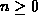
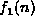
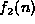
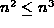
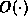

Data Structures and Algorithms
with Object-Oriented Design Patterns in Java
Data Structures and Algorithms
with Object-Oriented Design Patterns in Java
The purpose of this section is
to dispel some common misconceptions about big oh.
The next fallacy is related to the selection
of the constants c and  used to show a big oh relation.
used to show a big oh relation.
Fallacy Consider non-negative functions f(n), , and, such that . Since for all integers  if , then by Definition
.
This fallacy often results from the following line of reasoning:
Consider the function .
Let and  .
Then f(n) must be O(n),
since for all
.
Then f(n) must be O(n),
since for all  .
However, this line of reasoning is false because
according to Definition ,
c must be a positive constant, not a function of n.
.
However, this line of reasoning is false because
according to Definition ,
c must be a positive constant, not a function of n.
The next fallacy involves a misunderstanding of the notion of the asymptotic upper bound.
Fallacy Given non-negative functions , , , and, and for all integers , , then .
This fallacy arises from the following line of reasoning.
Consider the function and .
Since  for all values of  ,
we might be tempted to conclude that .
In fact, such a conclusion is erroneous.
For example, consider
,
we might be tempted to conclude that .
In fact, such a conclusion is erroneous.
For example, consider  and
and  .
Clearly, the former is
.
Clearly, the former is  and the latter is
and the latter is  .
Clearly too, for all values of !
.
Clearly too, for all values of !
The previous fallacy essentially demonstrates that while we may know how the asymptotic upper bounds on two functions are related, we don't necessarily know, in general, the relative behavior of the two bounded functions.
This fallacy often arises in the comparison of the performance of algorithms.
Suppose we are comparing two algorithms, A and B,
to solve a given problem and we have determined that the running times
of these algorithms are and ,
respectively.
Fallacy demonstrates that it is an error to conclude
from the fact that for all
that algorithm A will
solve the problem faster than algorithm B for all problem sizes.
But what about any one specific problem size?
Can we conclude that for a given problem size, say  ,
that algorithm A is faster than algorithm B?
The next fallacy addresses this issue.
,
that algorithm A is faster than algorithm B?
The next fallacy addresses this issue.
Fallacy Given non-negative functions , , , andfor which then .
This fallacy arises from a similar line of reasoning as the preceding one.
Consider the function and .
Since for all values of  ,
we might be tempted to conclude that there exists
a value
,
we might be tempted to conclude that there exists
a value  for which .
Such a conclusion is erroneous.
For example, consider and
for which .
Such a conclusion is erroneous.
For example, consider and  .
Clearly, the former is
.
Clearly, the former is  and the latter is
and the latter is  .
Clearly too, since for all values of ,
there does not exist any value
for which .
.
Clearly too, since for all values of ,
there does not exist any value
for which .
The final fallacy shows that not all functions are commensurate :
Fallacy Given two non-negative functions f(n) and g(n) then either f(n)=O(g(n)) or g(n)=O(f(n)).
This fallacy arises from thinking that the relation 
is like  and can be used to compare any two functions.
However, not all functions are commensurate.
and can be used to compare any two functions.
However, not all functions are commensurate. Consider the following functions:
Consider the following functions:
Clearly, there does not exist a constant c
for which  for any even integer n,
since the g(n) is zero and f(n) is not.
Conversely, there does not exist a constant c
for which for any odd integer n,
since the f(n) is zero and g(n) is not.
Hence, neither f(n)=O(g(n)) nor g(n)=O(f(n)) is true.
for any even integer n,
since the g(n) is zero and f(n) is not.
Conversely, there does not exist a constant c
for which for any odd integer n,
since the f(n) is zero and g(n) is not.
Hence, neither f(n)=O(g(n)) nor g(n)=O(f(n)) is true.
 Copyright © 1998 by Bruno R. Preiss, P.Eng. All rights reserved.
Copyright © 1998 by Bruno R. Preiss, P.Eng. All rights reserved.